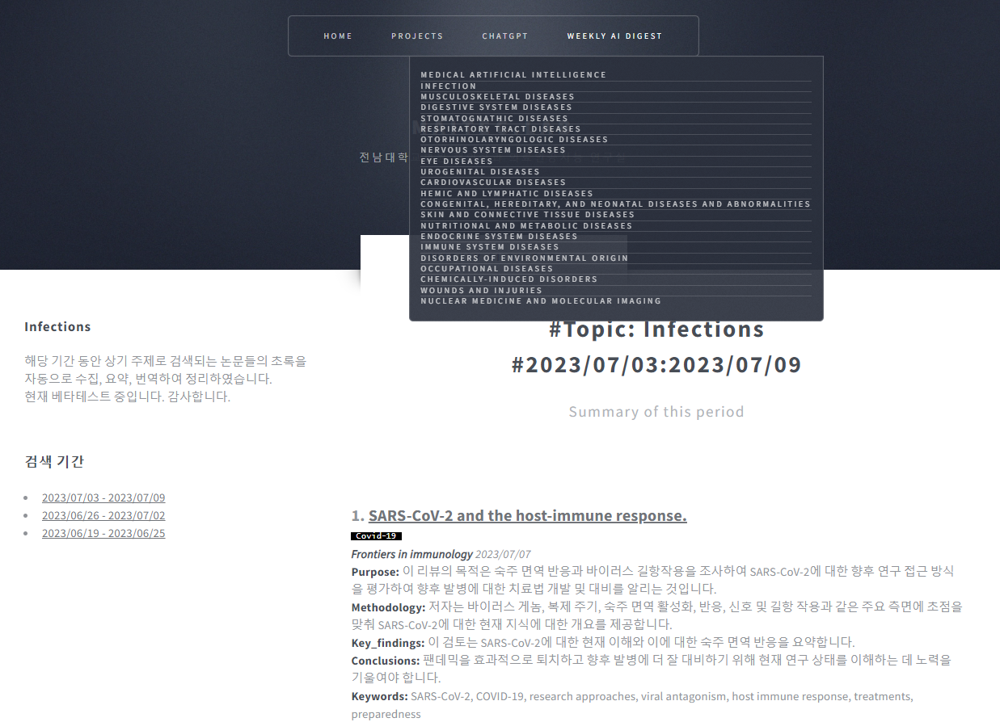

Weekly AI Digest
최신 의학 초록 AI 요약 서비스
Weekly AI Digest는 PubMed에 게시되는 최신 의학 논문 초록을 수집, 요약, 번역해서 게시하는 서비스입니다.
수집은 카테고리에 따라 진행하며, 각 카테고리는 Diseases[MeSH Term]에 속하는 Diseases category를 참고하였습니다.
📌 예시 이미지
📌 카테고리 목록
Weekly AI Digest는 다음과 같은 주요 카테고리로 구성됩니다:
- Medical Artificial Intelligence
- Infection
- Musculoskeletal Diseases
- Digestive System Diseases
- Stomatognathic Diseases
- Respiratory Tract Diseases
- Otorhinolaryngologic Diseases
- Nervous System Diseases
- Eye Diseases
- Urogenital Diseases
- Cardiovascular Diseases
- Hemic and Lymphatic Diseases
- Congenital Hereditary and Neonatal Diseases
- Skin and Connective Tissue Diseases
- Nutritional and Metabolic Diseases
- Endocrine System Diseases
- Immune System Diseases
- Occupational Diseases
- Chemically Induced Disorders
- Wounds and Injuries
- Nuclear Medicine and Molecular Imaging
또한, 각 초록에는 카테고리에 따른 태그가 적용되어 있으며, 이를 통해 논문 정보를 보다 빠르게 파악할 수 있습니다.
🚨 현재 서비스 중단 안내 🚨
현재 Weekly AI Digest 서비스는 중단된 상태입니다.
재개 일정이 확정되면 다시 안내드리겠습니다.
📌 업데이트 일정
- 매주 수요일부터 시작하여 목요일 또는 금요일에 업데이트가 완료됩니다.
- 해당 내용은 내비게이션 메뉴의 WEEKLY AI DIGEST에서 확인할 수 있습니다.
⚠️ 주의사항
- 이 서비스는 ChatGPT와 번역 API를 사용하므로, 일부 정보에 오류가 있을 수 있습니다.
- 카테고리별 검색 결과가 너무 많을 경우, 연관성이 높은 논문만 제공될 수 있습니다.
- 특정 태그 및 카테고리에 대한 개선 의견이 있다면 MAITEC.Lab@gmail.com으로 연락 부탁드립니다.